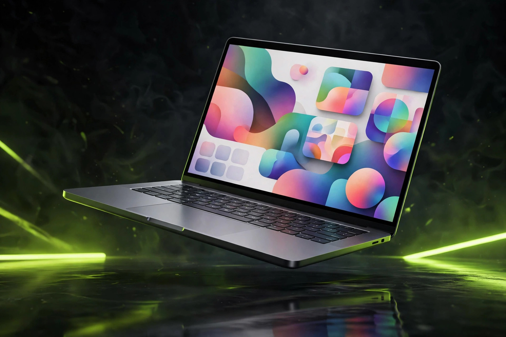

Website-uri care vând
Site-uri moderne, rapide și optimizate pentru mobil, construite pe infrastructură modernă (Cloudflare) — fără costuri lunare absurde și fără dependență de programatori pentru fiecare modificare.
- Site de prezentare / landing page
- Panou de administrare simplu
- Mentenanță și actualizări